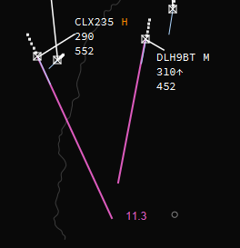

Target Pop Up Menu
The Target Pop Up Menu can be triggerd by pressing the right mouse button on a target. A target is the symbol which represents an aircraft on your radar.
And it looks like this
QDM
Displays the magnetic compass direction from the selected target to wherever the pointer is moved; when the mouse is next clicked, a line will be drawn between the two points. The numbers at the end of the line indicate the magnetic bearing from the initial point to the end point, and the number after the “/” indicates the distance between them in miles. If another radar target is double-clicked at the end of the QDM line, it will be locked to that line and move with the target, constantly updating the bearing and distance.
In the example above, ELLX is on a bearing of 203 degrees and 11.9 nautical miles from CLX235.
SEP
Displays the SEP between the selected target and the target next clicked-on.
- After clicking SEP, double click on a 2nd radar target, two lines will be drawn on the map, showing the relative position of the two targets at the time they will have minimum separation.
- If the lines are behind the direction of travel, then the minimum separation was in the past… if the lines are in the same direction as the travel, then the minimum separation is in the future.
- A number will also be displayed which represents the number of miles between the two targets at the moment of minimum separation.
- Note that the two lines will be constantly updated as the targets move.

HALO
Displays the HALO for the selected target.
See HALO Menu for more info and options
CONTACT > <frequency>
This will send a message to the selected target (as a CPDLC transmission) instructing them to contact the controller making the request. The transmission will also include the COM frequency required to make the contact.
PM >
Opens a dialogue box to input a text message to be sent to the pilot of the aircraft as a private message.
Only the individual pilot will be able to see the message.
TRACK
Display the track of the selected target.